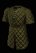

 北極毛皮 布甲
Arctic Furs
|
防禦: 45 - 51
(變動) (基本防禦 8-11)
|
部分套裝加成 |
輕扣帶
Arctic Binding
|
防禦: 33 (基本防禦: 3)
|
|
輕型鐵手套
Arctic Mitts
|
防禦: 9-11 (變動)
(基本防禦 9-11) |
|
短巨戰弓
Arctic Horn
|
雙手傷害: 9 - 21 (平均傷害15)
|